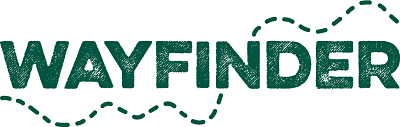
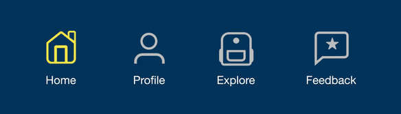
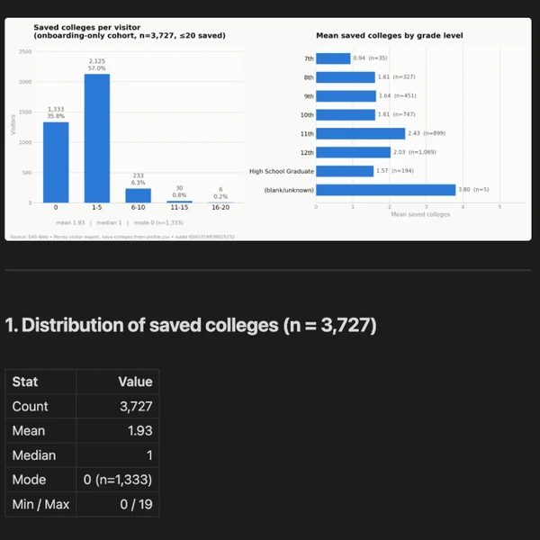

You need a designer who listens to educators and ships for students.
Hi, I'm Rahul.
At a glance
- K-12 UX, 5 years
- WCAG 2.1 AA
- M.S. Learning Design & Technology
I own K-12 features end to end, from watching students in classrooms to A/B-tested handoff, on a college and career readiness product.
Chiron — building a personalized, Socratic tutor out of an LLM
A Claude skill that turns any conversation into a Socratic micro-course, and where I work out how AI-assisted learning should actually feel to a student.
View on GitHub (opens in new tab)Encourage — asking students for 2x the data without dropping completion
When the onboarding survey for 150,000+ students had to double in length, I reordered the flow around where I'd watched students stall in classrooms and held completion near 84%.
Shipping Fall 2026
Encourage for Educators — designing for the counselor's workflow
The counselor side of Encourage, where guidance staff track hundreds of students on the same journey at their own pace, the closest analog to Wayfinder's educator side.
Shipped
What teams pull me in for, whatever the project



How I made this page
I built this page with Claude Code. We pulled Wayfinder's colors, fonts and textures straight from the CSS on withwayfinder.com, laid them out as a moodboard on a Claude design canvas, and iterated on a full-page mockup there before building it into the real site, checking contrast along the way.